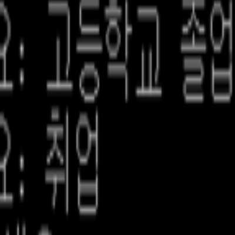
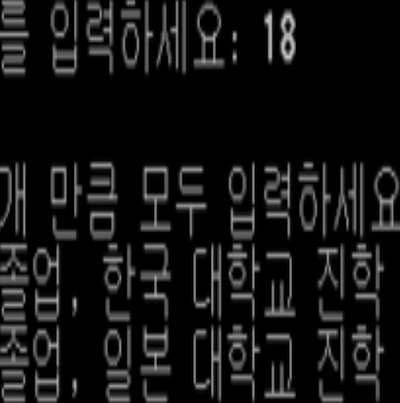

Implemented Functions

|
A function to Print All Cases You can print all cases where the destination can be reached, the number of all cases, the longest case, and the shortest case. |
|  |
A function to Set a Source and a Destination You can specify the origin and destination for printing all cases. |
|  |
A function to Set Roots You can declare all routes from origin to destination. |
Background and Purpose
It seems that there are not many programs that use real algorithms. So, I decided to implement a similar function to improve my programming skills.
It seems that there are not many programs that use real algorithms. So, I decided to implement a similar function to improve my programming skills.
What I Learned
- I learned how to implement a search algorithm in C++.
- I learned how to implement a simulator in C++.
Process
- I implemented DFS as a recursive function.
- I had the number of all cases printed when the necessary information is input.
- In this way, I was able to implement the program I wanted.
A thing to have Done my Best to Strengthen my Abilities
Implementing a search algorithm in C++
Implementing a search algorithm in C++
Overall Structure

Used Skills
C++
C++
Development Environment
Dev C++
Dev C++
Further Explanations